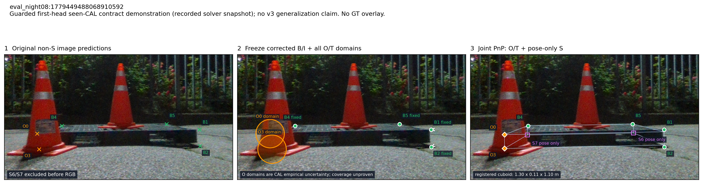
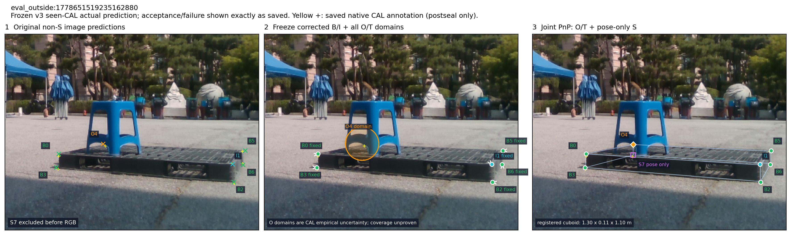
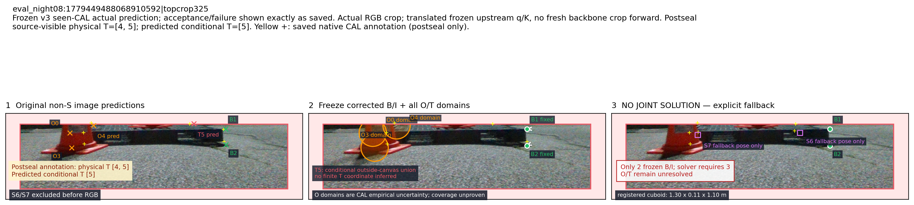

Actual S/B/I/O/T pipeline records
Guarded first-head seen-CAL: two actual external O domains

SVG
Frozen v3 seen-CAL: actual stool occlusion O4

SVG
Frozen v3 actual crop: missed physical T4 and rejected joint fit

SVG
Source-visibility diagnostic: all vs none vs single O/T constraints, including physical-state failures